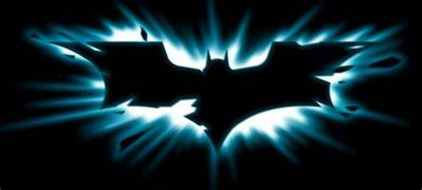

    <!DOCTYPE html>
    <html lang="en">
    <head>
        <meta charset="UTF-8">
        <meta name="viewport" content="width=device-width, initial-scale=1.0">
        <title>Document</title>
        <link rel="stylesheet" href="./style.css">
    
    </html>
    </head>
    <body>
        <div>
            <header>
                
                <nav>
                    <Ul>
                        <a href="./index.html">
                            <li>Home</li>
                        </a>
                        <a href="file:///C:/Users/wande/OneDrive/Documentos/Projects/batman-projeto-contato/contato.html">
                            <li>Contato</li>
                        </a>
                        <a href="file:///C:/Users/wande/OneDrive/Documentos/Projects/batman-projeto-fotos/fotos.html">
                            <li>Fotos</li>
                        </a>
                        <a href="file:///C:/Users/wande/OneDrive/Documentos/Projects/batman-projeto-comentarios/comentarios.html">
                            <li>Comentários</li>
                        </a>
                    </Ul>
                </nav>
            </header>
            <div id="banner"></div>
            <div id="trailer-container">
                <div class="content">
                    <video controls class="trailer">
                   <source src="./BATMAN _ Trailer.mp4" type="video/mp4">
                   Seu navegador não possui suporte para videos.
                    </video>
                    <div id="sinopse">
                        <p class="description">
                            Após dois anos espreitando as ruas como Batman, Bruce Wayne se encontra nas profundezas mais
                            sombrias de Gotham City. Com poucos aliados confiáveis, o vigilante solitário se estabelece como a
                            personificação da vingança para a população.
                        </p>
                        <button class="button">Comprar Ingresso</button>
                    </div>
            </div>
        </div>
        <div class="actor-cards-container">
            <div class="cards-content">
                <div class="card banner-1">Robert Pattinson - Batman</div>
                <div class="card banner-2">Zoe Kravitz - Mulher Gato</div>
                <div class="card banner-3">Jefrrey Wright - Gordon</div>
            </div>
        </div>
        <footer>
            
            <span>Todos o direitos reservados ©</span>
            <span>Desenvolvido por Wanderson Costa</span>

            <nav class="footer-navigation">
                <Ul class="footer-list">
                    <<a href="./index.html">
                        <li>Home</li>
                    </a>
                    <a href="file:///C:/Users/wande/OneDrive/Documentos/Projects/batman-projeto-contato/contato.html">
                        <li>Contato</li>
                    </a>
                    <a href="file:///C:/Users/wande/OneDrive/Documentos/Projects/batman-projeto-fotos/fotos.html">
                        <li>Fotos</li>
                    </a>
                    <a href="file:///C:/Users/wande/OneDrive/Documentos/Projects/batman-projeto-comentarios/comentarios.html">
                        <li>Comentários</li>
                    </a>
                </Ul>
            </nav>
        </footer>
    </body>
    </html>